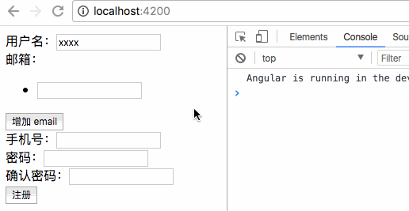
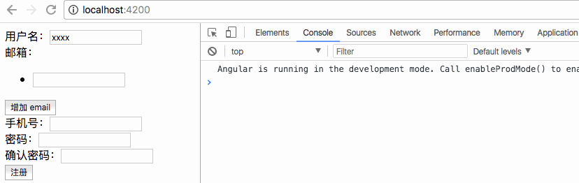
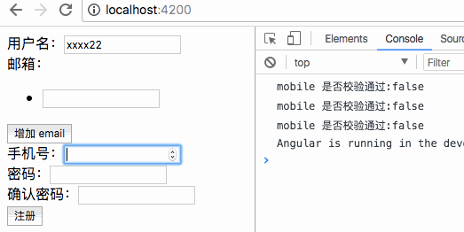
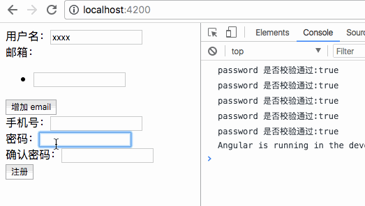
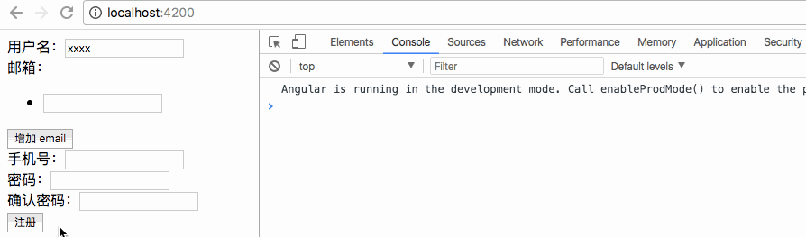
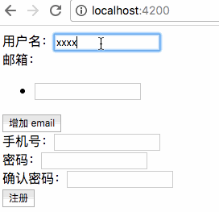
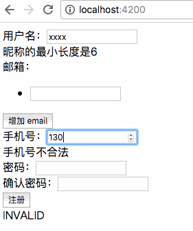

Angular 为表单处理提供了丰富的支持，超越了常规的数据绑定，将表单处理作为顶级特性进行了专门的功能设计和开发。
校验器
Angular 的校验器分为两种：
- 用户自定义的校验器
- 预定义的校验器
预定义校验器
预定义的校验器，存在 Valicators 中，包含 reuiqred、 minlength、maxlength、pattern 等属性。
在响应式表单中，校验器作为模型类的构造函数传入模型类。例如：
1 | import { Validators } from '@angular/forms'; |
如果想传入多个参数，可以传入一个数组。然后我们通过模型对象的 valid 属性来判断当前模型中的属性是否合法：
1 | import { Validators } from '@angular/forms'; |
当输入的字符数少于 6 个时，校验结果为 false。反之校验结果为 true。

此外，我们也可以通过 errors 属性来获取错误信息：
1 | createUser() { |
errors 中注明了详细的错误原因：

自定义校验器
自定义的校验器是符合特定签名规则的方法，参数为 AbstractControl，返回值为一个对象，key 必须为字符串类型，值为任意类型。
1 | xxx(param: AbstractControl): {[key: string]: any}{ |
注：AbstractControl 是 FormArray、FormControl 和 FormGroup 的父类，因此参数类型可以是三个中的任意一个。
1 | export class ReactivedFormComponent implements OnInit { |
结果如下：

当我们需要同时校验多个字段，比如 password 和 passwordConfirm，方法如下：
1 | export class ReactivedFormComponent implements OnInit { |
与 formModel 添加 validator 的方法不同，formGroup 添加 validator 时，需要添加一个对象，key 是 validator，value 指明了需要使用的校验器。
当我们确认密码输入与密码相同时，返回值变为 true。

info.get('password') 拿到的是一个父类抽象类，因此需要将它转换为具体的某个子类，添加 as FormControl。
最后，我们可以通过 formModel 为整个表单添加验证，即当所有字段的值均合法，才能进行下一步操作。
1 | createUser(){ |
当表单中某个字段不符合校验规则时，是无法打印出内容的。只有当表单中所有内容都通过校验，提交时才会执行相应的操作：

下面修改组件的模版，将错误信息显示给用户：
1 | <form [formGroup]="formModel" (submit)="createUser()"> |

hasError() 方法有两个参数，第一个参数是检查的校验错误信息 Error 的 key，只要 key 有值，则代表校验失败，已经返回了错误信息；第二个参数是要检查的字段名称。
注：嵌套属性，即 formGroup 中的某个属性，在绑定字段名称时，必须写成 formGroupName.formControlName，例如下面的 password 验证：
reactive-form.component.html
1 | <div formGroupName="passwordInfo"> |
上面我们将错误消息绑定在模版中，我们也可以将错误信息放在校验器中。即把下面的代码：
validators.ts
1 | export function passwordValidator(info: FormGroup): any { |
reactived-form.component.html
1 | <div [hidden]="!formModel.hasError('password', 'passwordInfo')"> |
修改为：
validators.ts
1 | export function passwordValidator(info: FormGroup): any { |
reactived-form.component.html
1 | <div [hidden]="!formModel.hasError('password', 'passwordInfo')"> |
异步校验器
异步校验器允许调用远程的一个服务来进行验证，的返回是一个可观测的对象（流）。
下面我们实现了一个异步校验器，延迟 5 秒执行校验：
valicators.ts
1 | import { Observable } from "rxjs"; |
reactive-form.component.html
1 | <div> |
reactived-form.component.ts
1 | export class ReactivedFormComponent implements OnInit { |
至此，数组的三个参数已经全齐了。第一个是初始化的值，第二个同步校验器，第三个是异步校验器。
校验顺序是，当同步校验通过时，才会调用异步校验。在异步校验之后会先显示 PENDING 字样，5 秒后显示校验结果。
